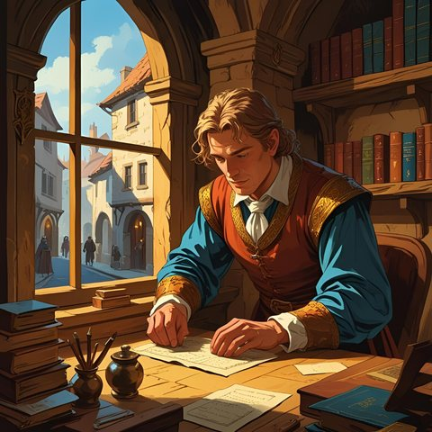

Paterne Flochet, banquier

- Beau-frère du prévôt Ebles Warnachaire. Gère les affaires courantes de la maison de change Warnachaire, rue de la Monnaie.
- Très inquiet : les attaques contre les marchands ciudaliens font baisser le chiffre d'affaires de la banque. Il croit à une manœuvre du royaume de Ressine.
- Discret pour protéger ses clients. Mais si on le prend avec diplomatie, il avoue avoir changé une grosse somme de vieux deniers pour un « gentilhomme de fortune », Borel l'Écumeur.